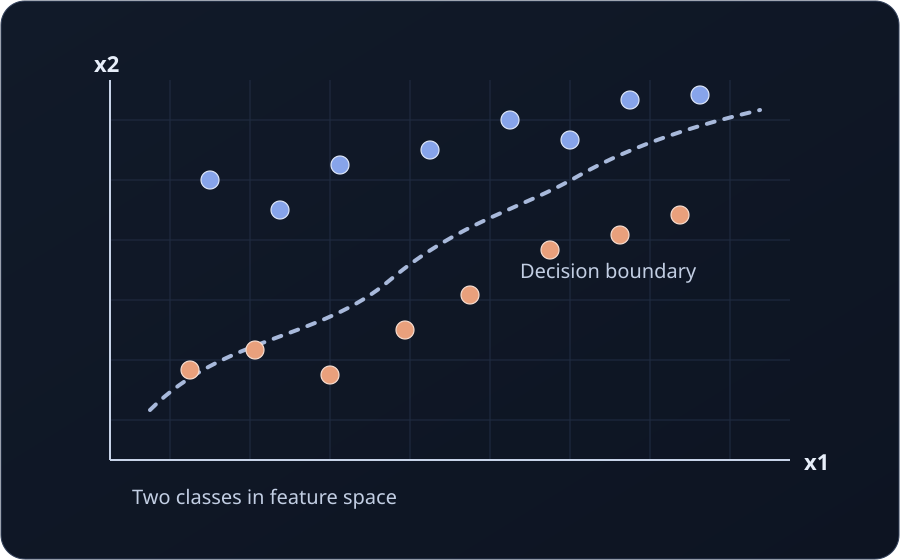
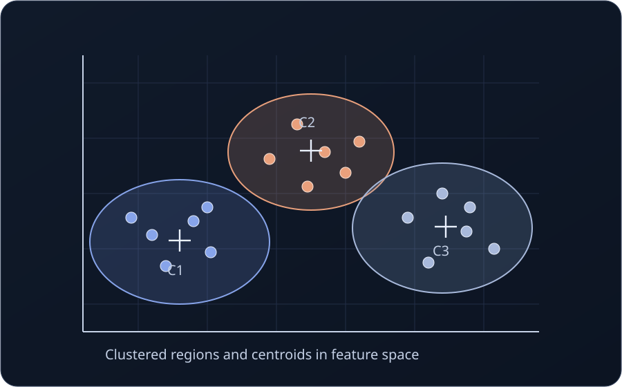

Data. ML. Decision Systems.
Future-ready intelligence for teams that build at speed.
Feature Space designs and delivers analytics foundations, machine learning products, and decision workflows that create measurable outcomes for modern businesses.
Feature Space Visuals
A quick visual intuition of how machine learning models interpret structure inside a feature space.


What Feature Space delivers
We combine strategy, engineering, and implementation to build systems that help teams move from data to confident action.
Data Platform Acceleration
Design and upgrade event models, pipelines, semantic layers, and reporting models to support reliable decision-making at scale.
Machine Learning Systems
Build or modernize ML workflows covering experimentation, feature pipelines, deployment patterns, and production governance.
Decision Workflows
Turn model outputs and analytics signals into practical operating decisions for pricing, risk, growth, or resource planning.
Enablement and Ownership
Embed with your team, document architecture, and leave behind maintainable systems with clear handover paths.
How engagements run
Work is split into transparent stages so priorities stay sharp and progress is visible.
Discovery sprint to frame goals, constraints, and value drivers.
Architecture and implementation plan aligned to your stack.
Delivery iterations with demos, instrumentation, and feedback loops.
Operational handover with playbooks, training, and roadmap options.
Bring your next data or ML initiative into production.
Tell us where your team is stuck. We will map the highest-impact route from concept to stable delivery.